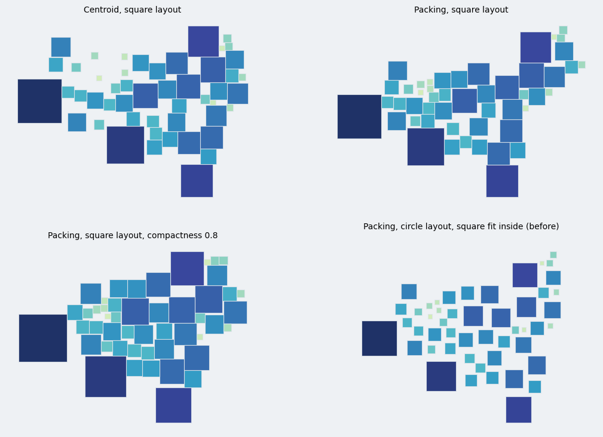

CirclePackingLayout(shape="square") packs axis-aligned squares of the circles' area with the circle layout's forces; squares touch along flat edges and keep their neighbors as well as circles do. A greedy stacking prototype was rejected.
A greedy stacking prototype (not in the PR) placed the squares one by one, flush against the placed squares, at the feasible spot nearest the original centroid. On the census snapshot it kept fewer neighbors than the centroid layout. The packing layout keeps neighbors through its forces (neighbor tangency, angular topology, compaction, contact sliding), and only the pair geometry of the simulator depends on the shape.
| layout | overlap | hull density | mean displacement | adjacent pairs kept | rank order x,y |
|---|---|---|---|---|---|
| centroid, circles | 0 | 0.58 | 161 km | 0.44 | 0.98 |
| packing, circles | 0 | 0.65 | 365 km | 0.63 | 0.97 |
| packing, circles, compactness 0.8 | 0 | 0.76 | 492 km | 0.73 | 0.95 |
| centroid, squares | 0 | 0.54 | 230 km | 0.45 | 0.98 |
| stacking, largest first | 0 | 0.65 | 313 km | 0.36 | 0.93 |
| stacking, smallest first | 0 | 0.52 | 176 km | 0.25 | 0.94 |
| stacking, center outward | 0 | 0.52 | 220 km | 0.36 | 0.97 |
| **packing, squares** | 0 | 0.57 | 447 km | **0.62** | 0.96 |
| **packing, squares, compactness 0.8** | 0 | 0.66 | 402 km | **0.70** | 0.95 |
Hull density is symbol area divided by the convex hull of the symbols; "adjacent pairs kept" is the fraction of the 109 neighboring pairs whose symbols are within a quarter of the mean symbol size; rank order is the Spearman correlation of x and y with the original centroids. Overlap is the largest overlap as a fraction of the mean symbol size (0 means at most the tolerance, 1e-4).
| layout | overlap | hull density | mean displacement | adjacent pairs kept | rank order | iterations | time |
|---|---|---|---|---|---|---|---|
| packing, circles | 0.0001 | 0.50 | 1146 km | 0.63 | 0.97 | 343 | 2.5 s |
| packing, circles, compactness 0.8 | 0.0001 | 0.78 | 3723 km | 0.52 | 0.84 | 463 | 3.6 s |
| packing, squares | 0.0016 | 0.47 | 1236 km | 0.58 | 0.97 | 442 | 4.4 s |
| packing, squares, compactness 0.8 | 0.0006 | 0.75 | 2777 km | 0.55 | 0.94 | 339 | 5.3 s |
| centroid, squares | 0.0006 | 0.41 | 581 km | 0.49 | 0.99 | 9 | 4.7 s |
The squares converge, keep about as many neighbors as the circles, and keep the rank order better at high compaction. The residual overlap of the squares on the world data (0.06 to 0.16 % of the mean symbol size) is above the 1e-4 tolerance: the final Gauss-Seidel passes, capped at 500, do not reach the tolerance for squares in the dense clusters.
| option | CirclePackingLayoutOptions.shape, "circle" (default) or "square"; the simulator takes shape |
| pair geometry | three helpers in the simulator: the pair distance (Euclidean, or the larger axis offset), the separation and contact direction (line between centers, or the dominant axis) and random directions for coincident pairs; used by the overlap count, the global expansion, the three overlap projections, the topology and tangency gaps and the contact reaction |
| unchanged | the attraction forces (compaction, origin, group), step control, convergence; the tangency and topology force directions stay center to center |
| size | the half-side is sqrt(pi)/2 times the circle radius; LayoutResult.sizes holds the half-sides; the canonical symbol is a square |
| circles | positions of six configurations on the census snapshot (default, Dorling, stage 1 only, spacing 0, Gauss-Seidel only, grouped) are bit-identical before and after |
| docs | gallery example plot_symbol_square_packing.py, a phrase in the layout table of the pipeline explanation |
The flow-density layout, rectangles with an aspect ratio, and the named presets (dorling, geographic and others) do not take shape; use CirclePackingLayout(shape="square", ...). #77 stays closed by this PR for the force-based layouts it named.
Suite 1426 passed, mypy and ruff clean. The new tests cover the canonical symbol, the spacing, no overlap as polygons, area proportional to the value, groups with attraction, the default being the circle, an invalid shape, and the pair geometry helpers.

Census snapshot, squares drawn: centroid layout with squares (top left), square packing (top right), square packing with compactness 0.8 (bottom left), and the circle layout with squares fit inside (before, bottom right).